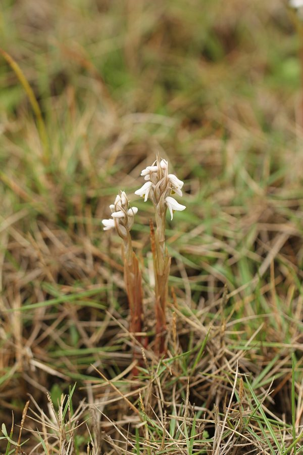

लॉन ऑर्किडLawn Orchid
Zeuxine strateumatica · Orchidaceae · FLR-0422

- Scientific name वैज्ञानिक नाम
- Zeuxine strateumatica (L.) Schltr.
- Family कुल
- Orchidaceae
- Hindi हिंदी
- लॉन ऑर्किड
- Local names स्थानीय नाम
- lawn orchid, soldier orchid, grass orchid, zeuxine
- Status here यहाँ की स्थिति
- native
- Movement आवागमन
- Resident, here all year
- Known from कहाँ दर्ज
- Others have published records from the Basti–Ayodhya districts बस्ती–अयोध्या के ज़िलों से दूसरों के प्रकाशित अभिलेख
- IUCN IUCN
- LC
- Review समीक्षा
- not yet reviewed
When to look कब देखें
Expected mainly in February, March. मुख्यतः फ़रवरी, मार्च में अपेक्षित।
Tell it apart from इनसे अलग पहचानें
लॉन ऑर्किड / Lawn Orchid
Zeuxine strateumatica (L.) Schltr. — Orchidaceae
लॉन ऑर्किड — सर्दियों के महीनों में नम घास के मैदानों, बगीचों और नदी कछारों में उगने वाला यह एक छोटा जमीनी ऑर्किड है। यह देखने में बिल्कुल हरी घास जैसा लगता है, लेकिन इसके शीर्ष पर छोटे सफेद और पीले फूलों की घनी बाली निकलती है। इसके मांसल तने और संकीर्ण पत्तियां जमीन पर फैली रहती हैं। यह हमारे आसपास उगने वाले कुछ चुनिंदा जंगली ऑर्किडों में से एक है जो इंसानी बस्तियों के बगीचों में भी पनप सकता है।
Quick Identification त्वरित पहचान
| Feature | Description |
|---|---|
| Habit | Small, erect terrestrial orchid growing in open grass turf or damp sandy silt |
| Stem | Succulent, fleshy, glabrous, pale green to reddish-tinged at the base |
| Leaves | Sessile, linear, sharply acuminate, grass-like, clasping the stem with hyaline sheaths |
| Inflorescence | Dense, terminal, cylindric spike bearing crowded small flowers |
| Flowers | Small, waxy, white to pale yellow, with prominent yellow saccate lip |
| Lip | Saccate at base, terminal lobe rounded or slightly notched, bright yellow |
Field tip: Inspect irrigated lawns, public parks, and moist sandbars along riverbanks during February and March. Look for tiny erect white flower spikes poking just above mown lawn grass or alluvial sandy mud.
हिंदी: सर्दियों में लॉन की हरी घास के बीच छोटे सफेद फूलों की सीधी बालियाँ देखकर इसे पहचाना जाता है। इसके पत्ते घास की तरह पतले और तने से चिपके होते हैं।
Morphology आकारिकी
| Measurement / Trait | Range / Description |
|---|---|
| Height | 2–10 in. (Duthie 1920) |
| Stem & Peduncle | Fleshy, erect, succulent, completely glabrous |
| Leaf-blade | Linear, grass-like, acuminate, clasping with hyaline truncate sheaths |
| Flower spike | Densely flowered cylindric terminal spike |
| Bracts | Ovate-lanceolate, acuminate, scarious, exceeding the ovary |
| Perianth | Dorsal sepal and petals forming a protective hood over the column |
| Labellum | Yellow, cymbiform and saccate at the base, with small terminal lobules |
A diminutive glabrous terrestrial herb with fleshy stems and fibrous roots. The leaves are sessile, linear, and grass-like, passing gradually into bract-like sheaths upwards along the flowering axis.
The terminal spike is densely crowded with small white blossoms. The lateral sepals are obliquely lanceolate and connivent, while the dorsal sepal unites with the falcate petals to form a protective hood over the short column. The bright yellow lip is deeply saccate at the base.
हिंदी: यह पौधा 2–10 in. ऊँचा होता है। इसके तने मांसल और चिकने होते हैं। शीर्ष पर छोटी सफेद पंखुड़ियों और पीले होंठ वाले नन्हें फूल घनी कतार में लगे रहते हैं।
Behaviour & Ecology व्यवहार और पारिस्थितिकी
Lawn orchid is a disturbance-tolerant pioneer orchid adapted to wet, open alluvial habitats. It colonizes exposed silt on receding river floodplains and moist sandbars following the monsoon, as well as artificial irrigated lawns and garden borders.
It maintains symbiotic associations with soil mycorrhizae, allowing protocorms and tiny seedlings to establish rapidly in nutrient-poor silt deposits. It frequently exhibits facultative apomixis, enabling solitary plants to produce viable dust-like seeds without insect visits.
हिंदी: यह पौधा बाढ़ के बाद नदी किनारे बची गीली रेत और बगीचों की सींची हुई घास में आसानी से उगता है। इसकी जड़ें मिट्टी में मौजूद कवक से पोषण लेती हैं।
Life Cycle / Phenology जीवन चक्र
Duthie (1920, p. 220) notes of Zeuxine sulcata that it occurs in open turfy and usually moist ground, and that it flowers during February and March.
The flowers, white or pink with a yellow lip, are borne in a dense raceme (Duthie 1920, p. 220).
हिंदी: दूथी (1920, पृ. 220) के अनुसार यह नम घास के मैदानों में पाया जाता है और फरवरी तथा मार्च के दौरान इसमें फूल आते हैं।
Associated Species / Interactions सहजीवी प्रजातियाँ
Grows alongside moist turf grasses like Cynodon dactylon, shaded riverine groves of जामुन (Syzygium cumini), and wetland herbs including Polygonum plebeium along stream margins.
In floodplain meadows, it shares damp sandy ground with sedges and occasional wetland species like ब्लंट-लीव्ड यूलोफिया (Eulophia obtusa). Small pollinators including sweat bees visit its nectar-producing blossoms.
हिंदी: यह दूब घास, जलभंगरा और अन्य नमी वाले छोटे पौधों के साथ उगता है। इसके फूलों पर नन्हीं मधुमक्खियाँ बैठती हैं।
Pests and Diseases कीट और रोग
Regular mechanical lawn mowing poses an immediate threat in urban parks, cutting down the terminal flower spikes before seed maturation.
In natural riverine settings, sudden unseasonal winter floods can drown developing colonies under thick layers of silt. Fungal damping-off occasionally destroys juvenile shoots in over-saturated, poorly aerated garden soils.
हिंदी: बगीचों में घास काटने वाली मशीन से इसके फूलों की बालियाँ कट जाती हैं। ज्यादा सड़े हुए पानी में इसके तने गल सकते हैं।
Agricultural / Human Relevance कृषि प्रासंगिकता
Duthie (1920, p. 220) notes this orchid under Zeuxine sulcata as common within the area in open turfy and usually moist ground.
Chopra et al. (1956, p. 260) record under Zeuxine strateumatica that the tubers are locally used as salep.
हिंदी: दूथी (1920, पृ. 220) के अनुसार यह पौधा खुले और नम घास के मैदानों में आम है। चोपड़ा (1956, पृ. 260) के अनुसार इसके कंद स्थानीय रूप से सालेप के तौर पर उपयोग किए जाते हैं।
Expected Locally स्थानीय रूप से अपेक्षित
Not a field record. Written from published accounts for eastern Uttar Pradesh. No confirmed local sighting yet — if you have seen it, that is what the atlas needs.
अभी तक स्थानीय पुष्टि नहीं। यह विवरण प्रकाशित स्रोतों से है, किसी अवलोकन से नहीं।
GBIF holds published records from these districts.
Published records exist across the Awadh and Purvanchal plain, including documented herbarium specimens from riverine soils and municipal lawns. In Basti, Ayodhya, and Ambedkar Nagar, observers should examine irrigated grassy borders and sandy silt deposits along riverbanks during February and March. A clear photograph showing the flowering spike, leaves, and habitat context will serve as a verified record.
हिंदी: इन जिलों से इसके प्रकाशित रिकॉर्ड मौजूद हैं। बस्ती और अयोध्या के पार्कों और नदी किनारे सर्दियों में इसके छोटे सफेद फूलों को देखा जा सकता है।
Distribution वितरण
Widespread across tropical and subtropical Asia, extending from India, Pakistan, and Sri Lanka eastwards through China, Japan, Southeast Asia, and the Philippines, and naturalized in North America and southern Africa.
In northern India, it occurs commonly along the plains of the Indus and Ganges river basins, thriving in all districts of Uttar Pradesh where moist alluvial silt or managed lawns provide suitable winter conditions.
हिंदी: यह पूरे भारत, पाकिस्तान, चीन और दक्षिण-पूर्व एशिया में पाया जाता है। उत्तर प्रदेश के सभी मैदानी जिलों में नदी कछारों और पार्कों में इसका वितरण मिलता है।
Research Questions शोध प्रश्न
- What proportion of lawn orchid populations in eastern Uttar Pradesh reproduce through apomictic seed set versus insect pollination?
- How does frequent winter lawn mowing in municipal parks affect local population density and seed production?
- क्या घाघरा नदी की रेत पर उगने वाले पौधे और शहर के बगीचों के पौधे एक ही आनुवंशिक समूह के हैं?
- Which specific mycorrhizal symbionts associate with this species during its rapid winter life cycle?
- क्या यह प्रजाति बदलते जलवायु चक्र और बढ़ते तापमान के कारण अपने खिलने का समय बदल रही है?
हिंदी: क्या इंसानी बगीचों में बार-बार घास कटाई के बावजूद यह पौधा अपने बीजों को बचाने में सफल हो रहा है?
Similar Species मिलती-जुलती प्रजातियाँ
| Species | Key Differences | Habitat / Occurrence | |
|---|---|---|---|
| Spiranthes sinensis (Ladies' Tresses) | Flowers arranged in a distinct spiral screw-like twist; petals pink or white | Moist meadows, marsh edges, and grassy slopes | |
| [[blunt_leaved_eulophia | ब्लंट-लीव्ड यूलोफिया (Eulophia obtusa)]] | Much larger plant; broad pleated leaves; nodding yellow flowers in lax raceme | Tall seasonal swamps and waterlogged Terai savannas |
| Herminium lanceum (Lobed Orchid) | Flowers green or yellowish-green; distinct elongated floral lip | Wet mountain pastures and sub-Himalayan valleys | |
| Cynodon dactylon (Dhub Grass) | True monocotyledonous pooid grass; produces jointed creeping stolons | Ubiquitous turf grass forming ground cover across the plains |
Field rule: A diminutive winter-blooming orchid with grass-like leaves and a dense upright spike of waxy white-and-yellow flowers growing in wet turf is Zeuxine strateumatica.
हिंदी: स्पाइरैन्थेस (Spiranthes) के फूल तने पर घुमावदार पेच की तरह लगते हैं, जबकि लॉन ऑर्किड के फूल सीधी सघन बाली में आते हैं।
Taxonomy & Classification वर्गीकरण
Original description. Originally named Orchis strateumatica by Carl Linnaeus in 1753 in Species Plantarum, volume 2, page 943. Rudolf Schlechter transferred the species to the genus Zeuxine in 1911 in Botanische Jahrbücher für Systematik, volume 45, page 394 (Zeuxine strateumatica (L.) Schltr.).
Subspecies. Monotypic; no valid subspecies are recognized. Historical Indian floras, including J. F. Duthie's work, frequently treated this plant under the taxonomic synonym Zeuxine sulcata Lindl.
Family and order placement. Belongs to the family Orchidaceae, subfamily Orchidoideae, tribe Cranichideae, and order Asparagales.
IUCN status rationale. Evaluated as Least Concern (LC) globally due to its vast geographical range, adaptable colonizing habit in anthropogenic turf, and stable populations across multiple continents.
हिंदी: लीनियस ने 1753 में इसे आर्किस वर्ग में रखा था, जिसे 1911 में स्लेक्टर ने जेउक्सीन में स्थानांतरित किया। दुथी की पुस्तक में इसे Zeuxine sulcata नाम से वर्णित किया गया है।
Photo Gallery फोटो गैलरी
No photos yet. (Contributions welcome!)
References संदर्भ
- Linnaeus, C. (1753). Species Plantarum, Tomus II. Impensis Laurentii Salvii, Holmiae, p. 943.
- Schlechter, R. (1911). Orchidaceae novae et criticae. Botanische Jahrbücher für Systematik, Pflanzengeschichte und Pflanzengeographie, 45(3): 381–398.
- Duthie, J. F. (1920). Flora of the Upper Gangetic Plain, and of the Adjacent Siwalik and Sub-Himalayan Tracts, Vol. 3, Part 2. Superintendent of Government Printing, Calcutta, pp. 219–220.
- Chopra, R. N., Nayar, S. L. & Chopra, I. C. (1956). Glossary of Indian Medicinal Plants. Council of Scientific & Industrial Research, New Delhi, p. 260.
- IUCN Red List of Threatened Species (2026). Zeuxine strateumatica. Version 2025-2.
- GBIF Secretariat (2026). Zeuxine strateumatica (L.) Schltr. GBIF Backbone Taxonomy. Checklist dataset https://doi.org/10.15468/39omei.
Source file: species/flora/weeds/lawn_orchid.md